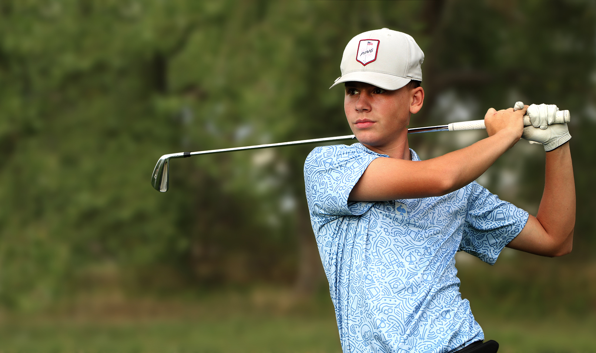

Scoring Trend
68–78
Other Full Rounds
Partial Round
Click a point on the trend chart to see round details.
Last 10 qualifying rounds

Forge Christian High School
Arvada, Colorado
Player Profile
I love competing and seeing how much I can improve from one tournament to the next. Golf has taught me that to get better takes a lot of patience, a lot of grinding and knowing you always learn something from both good rounds and bad.
I like being part of a team, but I also like the individual side of golf — because when I'm on the course, all the decisions are up to me. If I play good, it's on me. If I play bad, it's on me too.
My goal is to continue being a better player and earn the opportunity to compete in college. I’m looking for a program where I can learn all about the next level, challenge myself to get better and be better, contribute to the team, and continue improving as a golfer and as a student.
Isaiah Gonzales
Development
Click a point on the trend chart to see round details.
Last 10 qualifying rounds
Competition
| Date | Event | Finish | Score |
|---|---|---|---|
| Jun 2026 | CO JrPGA | Flatirons GC Optimist Qualifier | 75 |
| Jun 2026 | CO JrPGA | Applewood GC Jr Player Series | 74 |
| May 2026 | CO JrPGA | Racoon Creek Jr Cup Series | 72 |
| May 2026 | CO JrPGA | Broadlands GC Jr Player Series | 76 |
Where to Watch
Student Athlete
Character
“Coach testimonial placeholder. This should eventually be a short, specific statement about competitiveness, work ethic, character and coachability.”
— High School Coach
Recruiting Contact
I would welcome the opportunity to connect and learn more about your program.
This estimate gives coaches a course-difficulty-adjusted view of demonstrated scoring ability across different courses and tees.
The Stracker Stats Tracking system follows the World Handicap System (WHS) score-counting methodology as closely as possible by calculating a Score Differential for each handicap-eligible round using the player’s score, Course Rating and Slope Rating for the tees played. This Estimated Handicap Index is then derived from the lowest qualifying differentials in the player’s recent scoring record.
Not every recorded round qualifies. Rounds that do not meet handicap-eligibility requirements are excluded from the calculation. Certain elements of the official WHS process—including Playing Conditions Calculation (PCC) and other committee-administered adjustments—may not be available to Stracker.